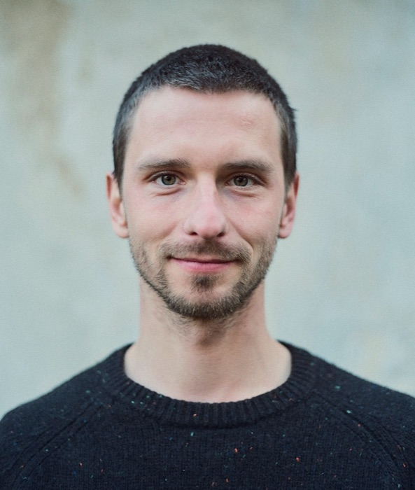

Psychologist and Researcher
Work takes up a large part of our lives and it can either support or undermine our well-being. I help individuals and organizations to identify and understand what can make their work fulfilling, healthy, and sustainable. My approach is grounded in scientific evidence from work and organizational psychology, including my own research. I believe that good research should translate into real change, for individuals and for the organizations they work in.
I grew up in the Czech Republic and obtained my Master’s in Clinical and Health Psychology at Charles University in Prague. After my studies, I spent almost two years working in research at the University of Bologna in Italy. In 2020, I moved to Switzerland, where I completed my PhD in Occupational Health Psychology at the University of Zurich and now work as a postdoctoral researcher. My experience of living and working abroad has helped me understand how challenging it can sometimes be to live and work in a new country.
Outside of work, I like being active and spend a lot of time cycling mountain passes, rock climbing, and skiing. I also enjoy learning languages, which is why I can work in English, French, Italian, and German, as well as in Czech, my mother tongue.
People seeking more motivation, fulfillment, and balance in their work, or navigating transitions, stress, and difficult work and life situations.
How I can help →Companies looking to build healthier, more engaged workplaces through evidence-based approaches to job design.
How I can help →Evidence-based support for individuals and organizations
Whether you are an individual looking for support in your professional life, or an organization seeking to improve well-being at work, I offer a thoughtful, evidence-based approach tailored to your needs. I work in English, German, French, Italian, and Czech.
I offer online sessions to support people who are looking for more motivation, fulfillment, and balance in their work, or who are going through transitions, stress, or difficult work and life situations. Together we look at what gives you energy and what drains it, and find practical steps to shape your work and life in a way that suits you. I work in a short-term, solution-focused way.
We meet online for 30 minutes to get to know each other, talk about what brings you, and see whether working together is a good fit.
In our first session, we explore what is on your mind and what you would like to get out of our time together. This can be a concrete goal, or simply space to talk things through.
In the following sessions, we talk about what is going on in your work and life and how you feel about it. Where helpful, we find practical steps you can try out in your everyday life.
I support teams and organizations in promoting healthy workplaces using evidence-based methods for job design and employee well-being. Healthy and motivated employees are the foundation of a productive and sustainable organization. I offer psychological assessments and tailored needs analyses based on a participatory approach, to understand what energizes your employees and what strains them. I gained practical experience with organizational interventions in the EU-funded project H-WORK, where I conducted psychological assessments and ran workshops with employees.
Interested in working together? Get in touch and we can talk about how I may support you.
As a researcher, I study what makes work healthy and fulfilling, and the approaches I use with clients are grounded in that evidence. Below you can find the key concepts I work with and the research behind them, including my own.
Salutogenesis looks at the sources of health rather than the causes of illness. It focuses on people’s resources and strengths, on what helps them stay resilient under pressure, and on the positive aspects of work and life that keep them well. This perspective is the general orientation of my work.
We are not only shaped by our work, we can also shape it ourselves. Small changes to how we work, and to how we spend our free time, can help us find more energy, meaning, and balance. In my work with individuals, I draw on my own research on job crafting and off-job crafting.
Every job has demands that cost energy and resources that give energy back. Well-designed work keeps demands manageable and offers variety, autonomy, and room to grow. I draw on well-established models, such as the SMART model of work design and the job demands-resources model.
Antonovsky, A. (1996). The salutogenic model as a theory to guide health promotion. Health Promotion International, 11(1), 11–18. https://doi.org/10.1093/heapro/11.1.11
de Bloom, J., Vaziri, H., Tay, L., & Kujanpää, M. (2020). An identity-based integrative needs model of crafting: Crafting within and across life domains. Journal of Applied Psychology, 105(12), 1423–1446. https://doi.org/10.1037/apl0000495
Parker, S. K., & Knight, C. (2024). The SMART model of work design: A higher order structure to help see the wood from the trees. Human Resource Management, 63(2), 265–291. https://doi.org/10.1002/hrm.22200
Bakker, A. B., & Demerouti, E. (2017). Job demands–resources theory: Taking stock and looking forward. Journal of Occupational Health Psychology, 22(3), 273–285. https://doi.org/10.1037/ocp0000056
Newman, D. B., Tay, L., & Diener, E. (2014). Leisure and subjective well-being: A model of psychological mechanisms as mediating factors. Journal of Happiness Studies, 15(3), 555–578. https://doi.org/10.1007/s10902-013-9435-x
Tušl, M., Kujanpää, M., Kosenkranius, M., & de Bloom, J. (2026). Workers’ proactive pursuit of meaning: The role of needs-based crafting. In Work meaning and motivation: Interdisciplinary perspectives on work well-being (pp. 59–80). Springer. https://doi.org/10.1007/978-3-032-23826-9_3
Tušl, M. (2025). Exploring needs-based crafting in daily life: A registered report of a mixed-methods daily diary study. Health Psychology and Behavioral Medicine, 13(1), 2537699. https://doi.org/10.1080/21642850.2025.2537699
Tušl, M., Lehmann, A. I., Morstatt, A. I., Dressel, H., & Bauer, G. F. (2025). Longitudinal changes in occupational well-being: A four-wave panel survey of employees in Switzerland and Germany. BMC Public Health, 25(1), 4187. https://doi.org/10.1186/s12889-025-25237-z
Tušl, M., Bauer, G. F., Kujanpää, M., Toyama, H., Shimazu, A., & de Bloom, J. (2024). Needs-based job crafting: Validation of a new scale based on psychological needs. Journal of Occupational Health Psychology, 29(2), 57–71. https://doi.org/10.1037/ocp0000372
Tušl, M., Šípová, I., Máčel, M., Cetkovská, K., & Bauer, G. F. (2024). The sense of coherence scale: Psychometric properties in a representative sample of the Czech adult population. BMC Psychology, 12(1), 293. https://doi.org/10.1186/s40359-024-01805-7
Pijpker, R., Kerksieck, P., Tušl, M., de Bloom, J., Brauchli, R., & Bauer, G. F. (2022). The role of off-job crafting in burnout prevention during COVID-19 crisis: A longitudinal study. International Journal of Environmental Research and Public Health, 19(4), 2146. https://doi.org/10.3390/ijerph19042146
Tušl, M., de Bloom, J., & Bauer, G. F. (2022). Sense of coherence, off-job crafting, and mental well-being: A path of positive health development. Health Promotion International, 37(6), daac159. https://doi.org/10.1093/heapro/daac159
Tušl, M., Brauchli, R., Kerksieck, P., & Bauer, G. F. (2021). Impact of the COVID-19 crisis on work and private life, mental well-being and self-rated health in German and Swiss employees: A cross-sectional online survey. BMC Public Health, 21(1), 741. https://doi.org/10.1186/s12889-021-10788-8
University of Zurich, Switzerland
University of Zurich, Switzerland
Charles University in Prague, Czech Republic
Charles University in Prague, Czech Republic
Curtin University (Australia), University of Neuchâtel (Switzerland), NTNU (Norway), University of Groningen (Netherlands), University of Bologna (Italy)
Remedium, Prague, Czech Republic
Whether you're an individual curious about working together or an organization looking for support, feel free to reach out. The first 30-minute call is free, a chance to get to know each other and see whether we're a good fit.
Based in Zurich, Switzerland · Sessions available online